Measuring and modeling nocturnal heat in leeward coastal Oʻahu, Hawaiʻi
Between November 2024 and January 2025, one hundred Thermochron iButton loggers in polystyrene-cup radiation shields recorded air temperature every 30 minutes at about 1.5 m, on street-sign posts, poles and fences across two contrasting districts: the compact, partly high-rise core of Honolulu and the low-rise suburban plain of ʻEwa–Kapolei, 25 km apart on the same leeward coast. The community stewarded the monitoring project, hosting the stations and helping to deploy and recover them.
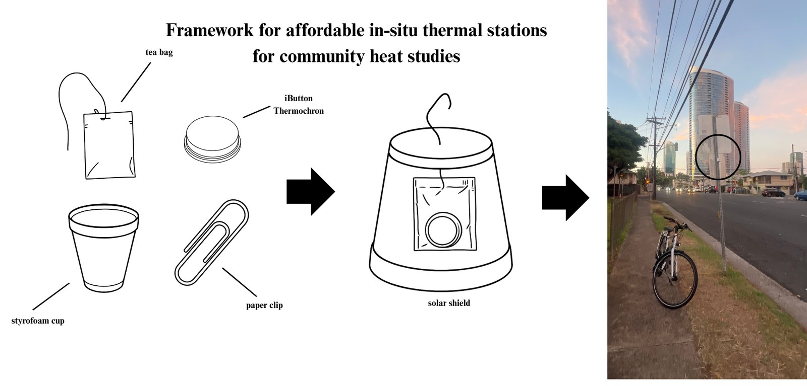
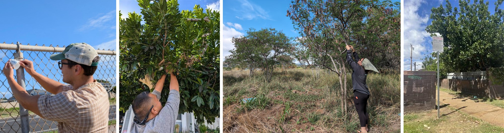
Cities are warmer at night than their surroundings, and some streets warmer than others. The built-environment properties that control that pattern have been studied mostly in large continental cities; whether the same relationships hold in a small, humid, trade-wind island city was unknown, and no fixed air-temperature network had been operated in Hawaiʻi to find out. This thesis measured canopy-layer air temperature with 100 low-cost logger stations in two districts of leeward Oʻahu from November 2024 to January 2025: the compact, partly high-rise Honolulu core and the low-rise suburban plain of ʻEwa–Kapolei (74 recovered sites). On 11 calm, clear nights identified from ERA5, each site's night-mean departure from its district median (ΔT) was related by linear mixed-effects models to eight descriptors of urban form and setting from 1 m land cover, building footprints and the coastline: impervious, tree-canopy, building-footprint and water fractions, mean building height, sky view factor, canyon aspect ratio and distance to the coast.
Site means of ΔT spanned 3.4 °C in Honolulu and 3.0 °C in ʻEwa, and in Honolulu the pattern was highly repeatable between nights. Descriptors within 100 m of each sensor explained it best or nearly so. Pooled across districts, impervious fraction (+0.16 °C per 10 percentage points) and mean building height (+0.06 °C per meter) were the strongest predictors, and ΔT fell with distance from the coast (−0.18 °C per km). The drivers differed between districts (p < 0.001): coastal distance (−0.53 °C per km) and impervious fraction dominated in Honolulu, building height (about 0.13 °C per meter) and impervious fraction in ʻEwa, where the coast had no effect. Urban form explained 25% of the variance of ΔT pooled and 33–39% within districts; a further 40% pooled was persistent site-level variation the descriptors did not capture. The relationships held under every alternative night-selection threshold and, although weaker, on all nights. Impervious cover and building mass drive nocturnal heat retention in a tropical maritime city as elsewhere, but the weight of building height, and the role of the coast, differ between neighborhood types 25 km apart. A single model should not be transferred across the island, and heat adaptation in Hawaiʻi should draw on ground-level air-temperature measurements.
A selection; every figure of the thesis, at full resolution (and as PDF for the statistical figures), is in results/figures. Click an image for the full-resolution version.
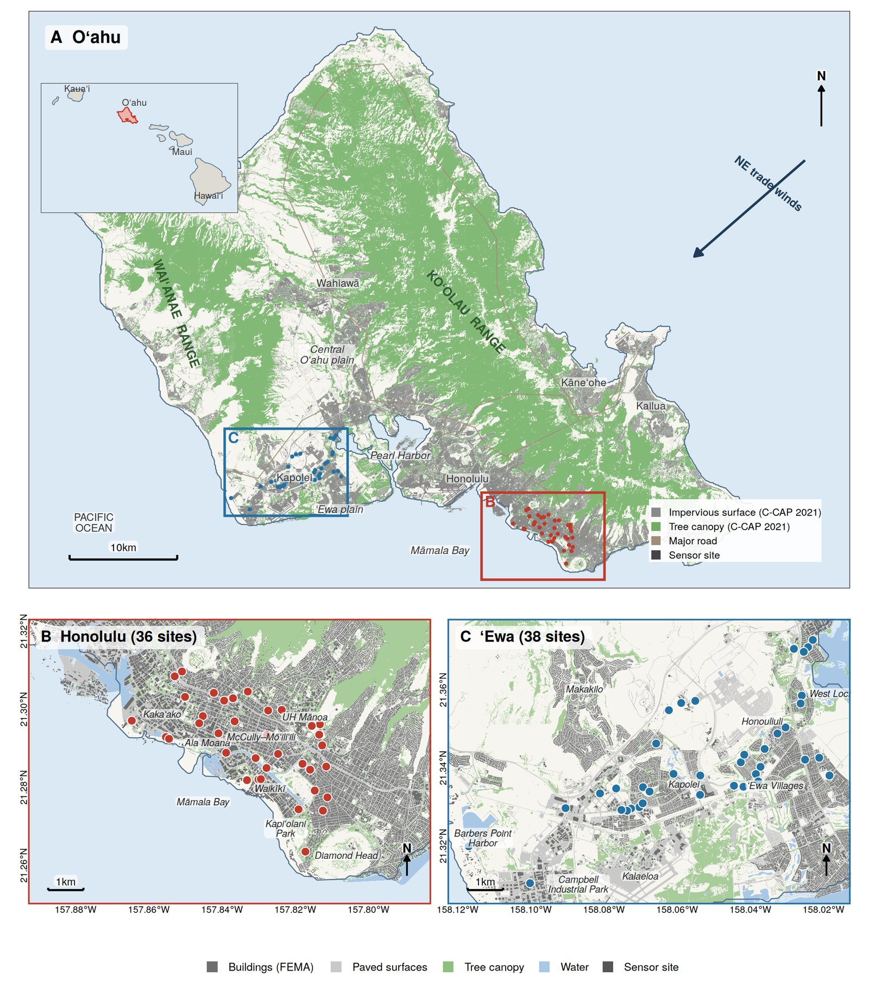
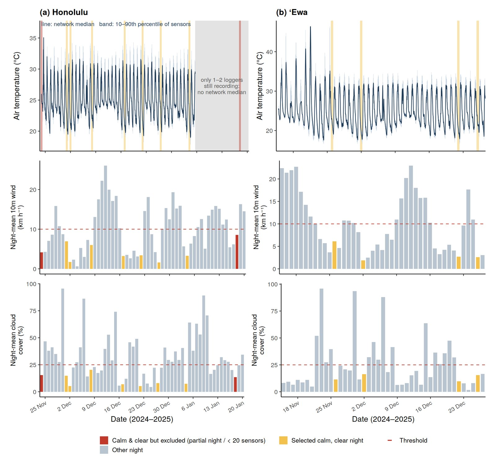
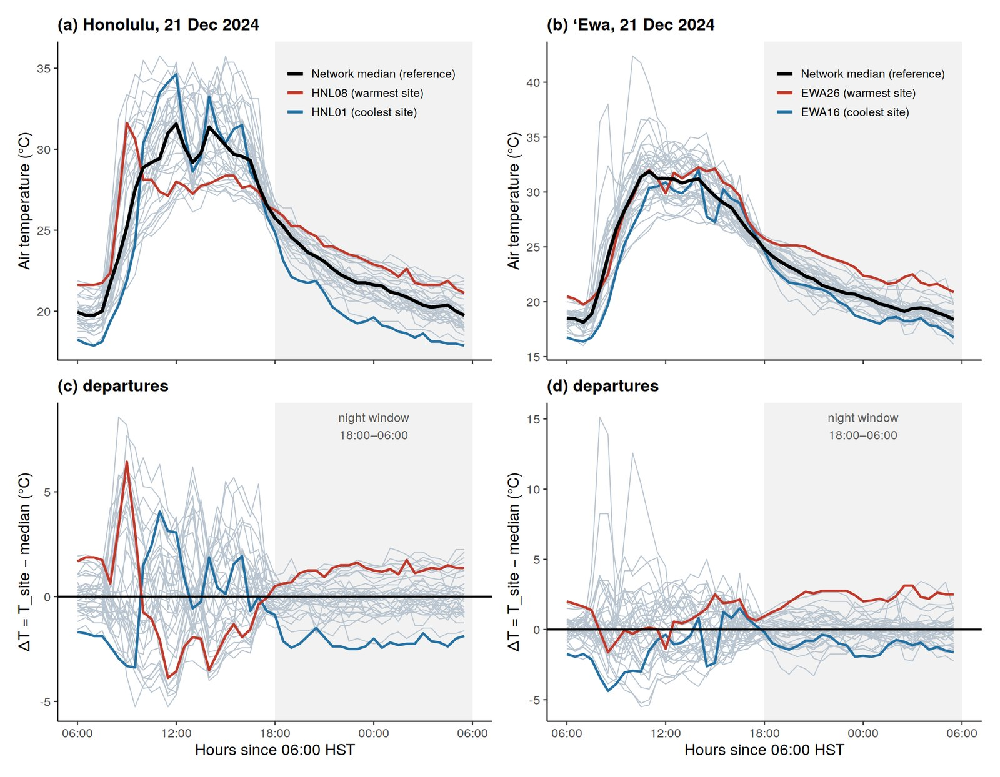
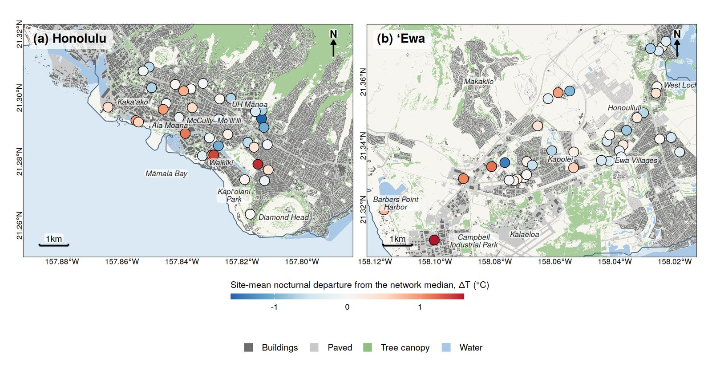
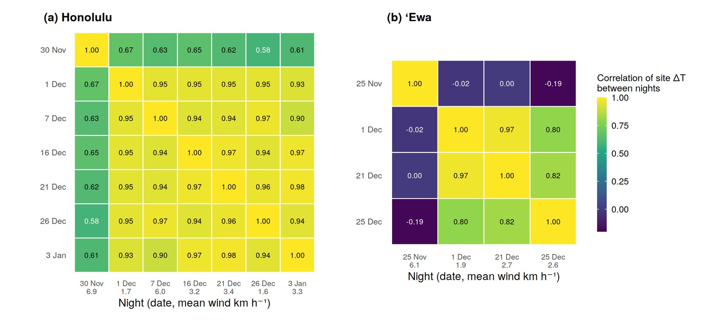
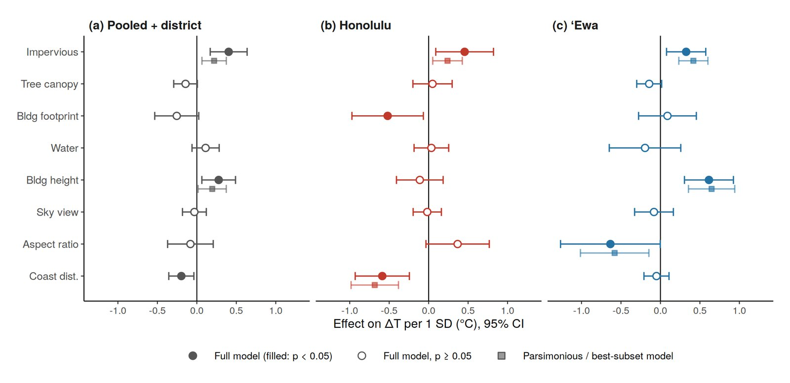
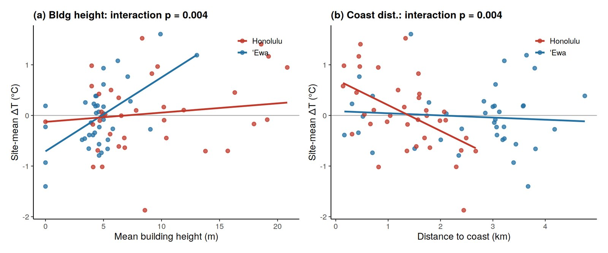
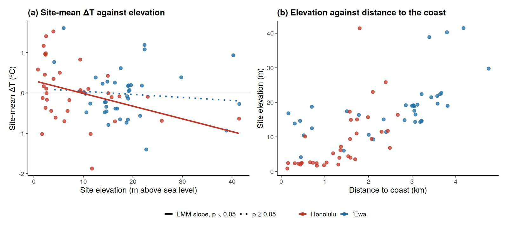
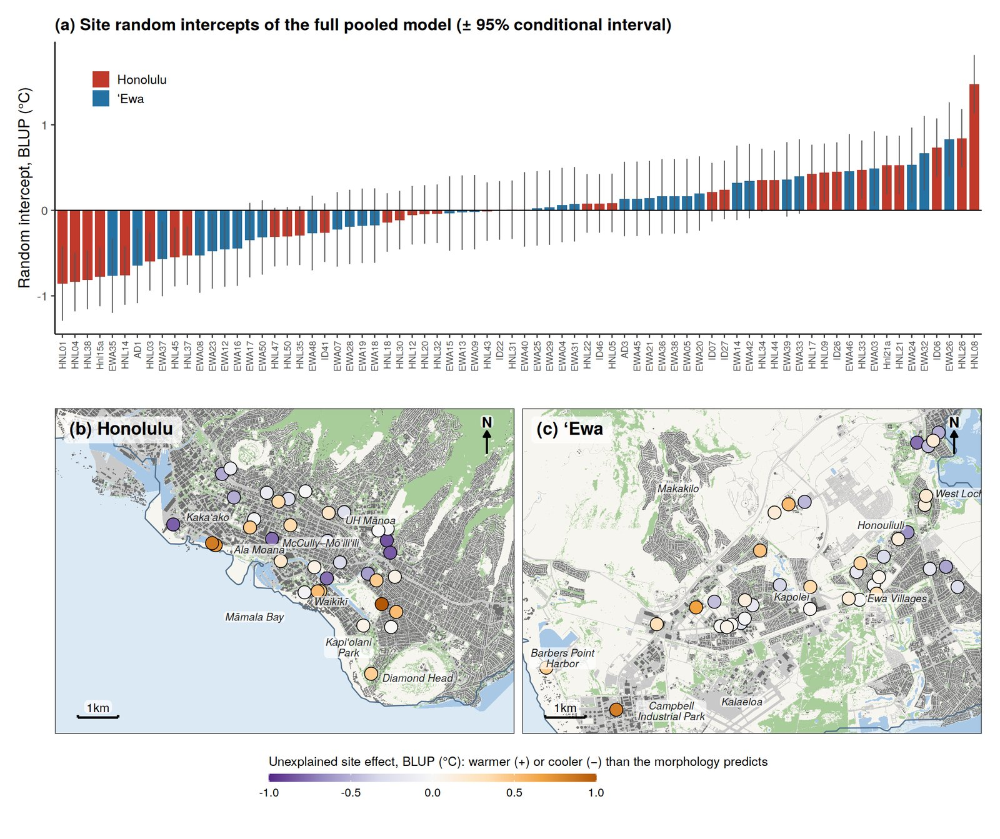
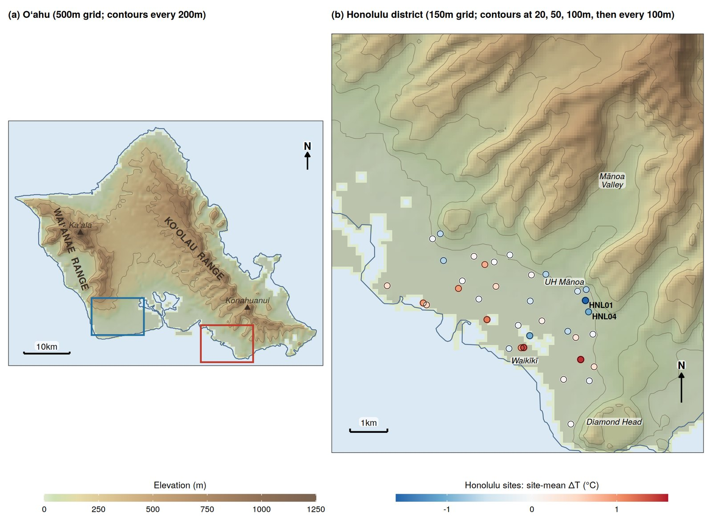
Every number, table and figure in the thesis is produced from the loggers' export tables by ten R scripts, run in order by a single command. The walkthrough shows the code of each step with its output and names the package that does it.
| Script | Does |
|---|---|
00a_compile_logger_readings.R | the loggers' export tables → one record, plus logger metadata |
00_prepare_inputs.R | binning, network median, ERA5 join, night selection, sensor-night table |
01_site_predictors.R | the eight descriptors at three radii |
02_models.R | every mixed-effects model and test; writes thesis_results.json |
03_figures.R | the figures of the main text |
04_replication_check.R | R versus Python, quantity by quantity |
05_thesis_tables.R | the 22 tables of the thesis, as printed |
06_elevation_check.R | the terrain check |
07_sensitivity_checks.R | the three site-level checks |
08_appendix_figures.R | the maps and diagram of Appendix B |
Packages: dplyr, tidyr, readr, lubridate, jsonlite (data); sf, terra (geometry and rasters); lme4, lmerTest, performance, car (models); ggplot2, patchwork (figures). Versions in results/sessionInfo.txt.
Rscript analysis/requirements.R # once
Rscript analysis/run_all.R # ~30 minThe repository justinkellum-ship-it/JustinKellumThesis holds the measurements, the processed tables, the code, the results and the walkthrough:
The code is released under the MIT License; the data, results and figures under Creative Commons Attribution 4.0. Third-party inputs keep their providers' terms: NOAA C-CAP, FEMA/ORNL USA Structures, GSHHG (Wessel & Smith 1996), ERA5 (Hersbach et al. 2020) via Open-Meteo, USGS 3DEP and the USGS 10 m DEM via PacIOOS, NOAA CO-OPS, Natural Earth.
Kellum, J. (2027). Island Urban Climatology: Measuring and Modeling Nocturnal Heat in Leeward Coastal Oʻahu, Hawaiʻi. M.A. thesis, University of Hawaiʻi at Mānoa. Data and code: https://github.com/justinkellum-ship-it/JustinKellumThesis
@mastersthesis{kellum2027island,
author = {Kellum, Justin},
title = {Island Urban Climatology: Measuring and Modeling
Nocturnal Heat in Leeward Coastal O{\textquoteleft}ahu, Hawai{\textquoteleft}i},
school = {University of Hawai{\textquoteleft}i at M{\={a}}noa},
year = {2027},
url = {https://github.com/justinkellum-ship-it/JustinKellumThesis}
}The thesis PDF on this page is the revised draft of September 2026, for a degree to be conferred in August 2027; the final version will replace it after the committee's approval.